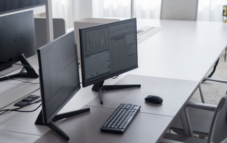

Copyright © 2022 renaldinurmazid .

Renaldi Nurmazid
Peserta Program Beasiswa Protonema 2022/2023
Sejarah Perkembangan Komputer
Awal Munculnya Komputer
Komputer pertama kali ditemukan pada 1822 oleh seorang ahli matematika asal Inggris, Charles Babbage. Mulanya, Babbage bermaksud untuk menciptakan sebuah mesin hitung bertenaga uap yang dapat menghitung tabel angka. Mesin tersebut kemudian ia beri nama "Difference Engine 0" dan digadang-gadang sebagai komputer pertama di dunia. Bentuk Difference Engine 0 sendiri sangat jauh berbeda dari kebanyakan model komputer modern saat ini.
Hingga pada 1890, seorang penemu bernama Herman Hollerith merancang sebuah sistem kartu yang mampu menghitung hasil sensus AS yang dilakukan pada 1880. Berkat inovasi tersebut, Hollerith berhasil menghemat anggaran pemerintah sebanyak 5 juta dollar AS. Selanjutnya, Hollerith terus mengembangkan potensinya di ranah teknologi hingga akhirnya sukses mendirikan perusahaan komputer IBM.


Sejarah Perkembangan Komputer Digital
Komputer digital pertama kali mulai dikembangkan pada tahun 1930. Pengembang mesin komputer digital pertama kali adalah Alan Turing yang juga merupakan seorang peneliti matematika. Ia berhasil mengembangkan sebuah mesin yang dapat menjalankan sekumpulan perintah. Mesin itu kemudian disebut dengan Turing Machine, dengan simulasi gagasannya yang juga dinamai uji Turing.
Meskipun Turing menjadi pengembang mesin pertama, akan tetapi komputer digital baru dikembangkan pertama kali oleh Konrad Zuse. Insinyur mesin asal Jerman tersebut membuat komputer digital pertama bernama Z1 sebelum pecahnya perang dunia kedua. Zuse merakit model komputer digital pertama tahun 1936 di Berlin tepatnya di ruang tamu orang tuanya. Model komputer digital yang dikembangkan oleh Zuse ini sayangnya dihancurkan ketika Perang Dunia II. Walaupun begitu, ia tetap dikenal sebagai sang pencipta komputer digital pertama. Kemudian, ketika perang dunia II tengah berlangsung tahun 1943, John Mauchly berhasil menciptakan mesin bernama Electronic Numerical Integrator and Calculator (ENIAC).